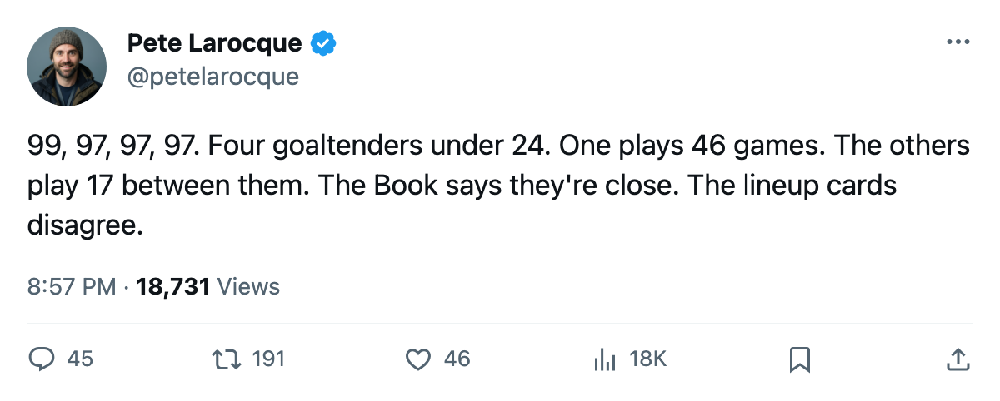
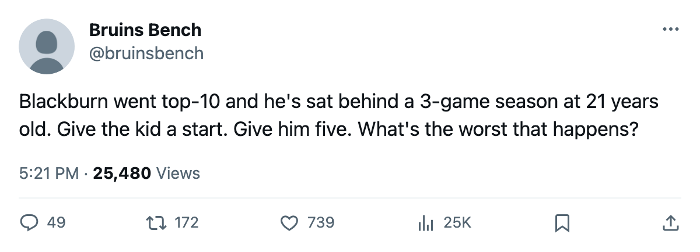

Four Goaltenders Under 24 Have 97 Potential. One of Them Plays.
Rick DiPietro, Maxime Ouellet, Ray Emery, Dan Blackburn. The Book ranks them close to the same. The ice does not.
 Pete LarocqueScouting editor · The Prospect File
Pete LarocqueScouting editor · The Prospect File
 Rick DiPietro84 has started 46 games for
Rick DiPietro84 has started 46 games for  New York Islanders this season. Maxime Ouellet82 has played 11 for
New York Islanders this season. Maxime Ouellet82 has played 11 for  Toronto Maple Leafs. Ray Emery80 has suited up 3 times for
Toronto Maple Leafs. Ray Emery80 has suited up 3 times for  Ottawa Senators.
Ottawa Senators.  Dan Blackburn79 has 3 for
Dan Blackburn79 has 3 for  New York Rangers. Four goaltenders, all under 24, all graded at 97 potential or higher by the Bureau. Three of them have 17 games between them.
New York Rangers. Four goaltenders, all under 24, all graded at 97 potential or higher by the Bureau. Three of them have 17 games between them.
The Book has DiPietro at 99, the highest potential the Bureau gives any goaltender. Ouellet, Emery, and Blackburn sit at 97. That is 2 grades apart on a 50-99 scale. The difference in ice time between the top of that list and the bottom of it is 46 games versus 3.
The one who plays
DiPietro was the first pick in 2000. He is 23, he is 23-20-1 this season, and he earns $1.10M with one year left on his deal. The Bureau's Index has him at +4, putting his current overall at 80. His agility reads 94. His rebound control reads 59.
That rebound number is what the tape says. A goaltender with 94 agility who cannot hold the puck is giving up second chances all night. New York sits at 64 points, 5 back of a playoff spot in the Atlantic, and the 99 hasn't helped.
The three who don't
Ouellet went 22nd overall in 1999. He is 23, with 11 games, 36.6 minutes a night when he gets them, a 0 on the Index, and a 97 potential that the Bureau has not revised downward. Toronto Maple Leafs sits at 102 points with Mikael Tellqvist75 at -3 on the Index. Toronto has room behind Tellqvist.
Emery is the one I keep coming back to. He went 99th in 2001, fourth round. A 4th-round goaltender with a 97 potential is either a scouting miss in the other direction or a late-developer the Bureau is betting on. He is 22, has 3 games, an overall of 76, and an Index of +1. Ottawa has played 64 games. Eighteen remain.
Blackburn went 10th overall in 2001. At 21, he has played 3 games. His overall is 75, his Index is 0. The Rangers are at 73 points, 2nd in the Atlantic. They are winning without him. At 21, with a 97 potential, he needs games.
What the gap means in June
None of these four goaltenders is on the Junior Bureau's board. The top goaltender prospect for 2005 is Sami Sundblad at 82 potential. The class behind these four is thin. No one is coming to make these three obsolete, which makes their 17 combined games harder to justify.
The Bureau's potential grades say these men are close to DiPietro in what they will become. The Development Index, the overall grades, the games played: none of them agree. A 97 potential says the Bureau expects these goaltenders to develop. Three games in 64 team games says the present does not match.
DiPietro's contract expires after this season. The other three are not yet at that point. The summer of 2005 will tell us whether a 97 is worth a trade deadline package. Right now, it is worth 3 games in Ottawa and 3 in New York.

